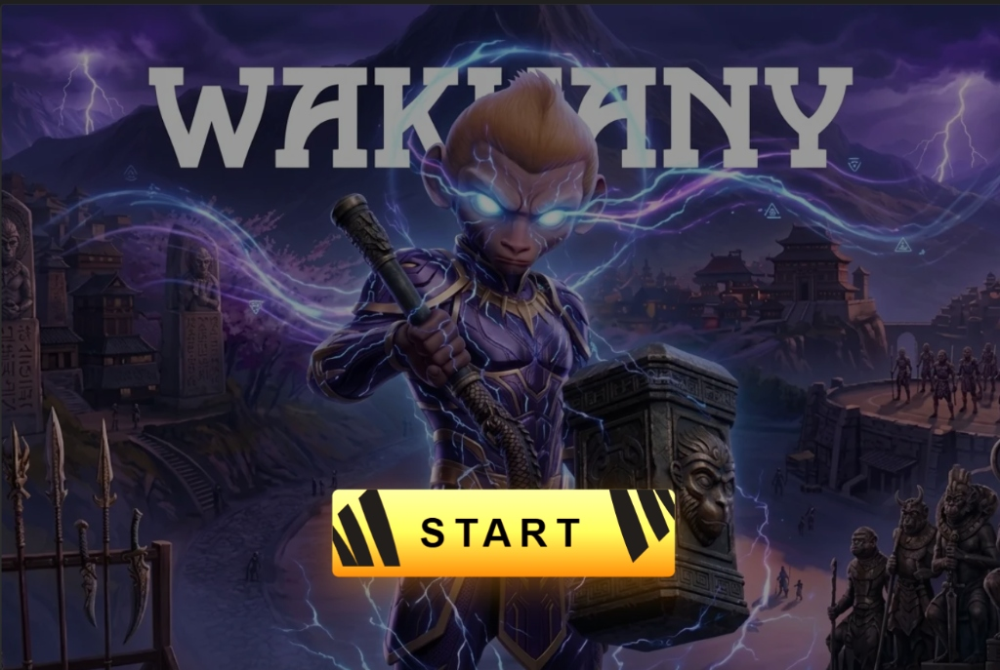
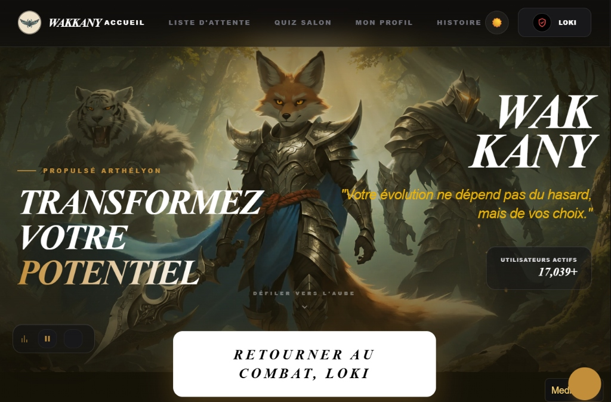
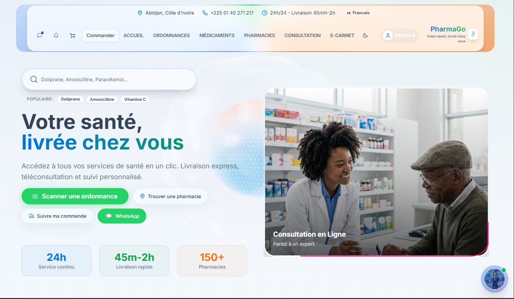
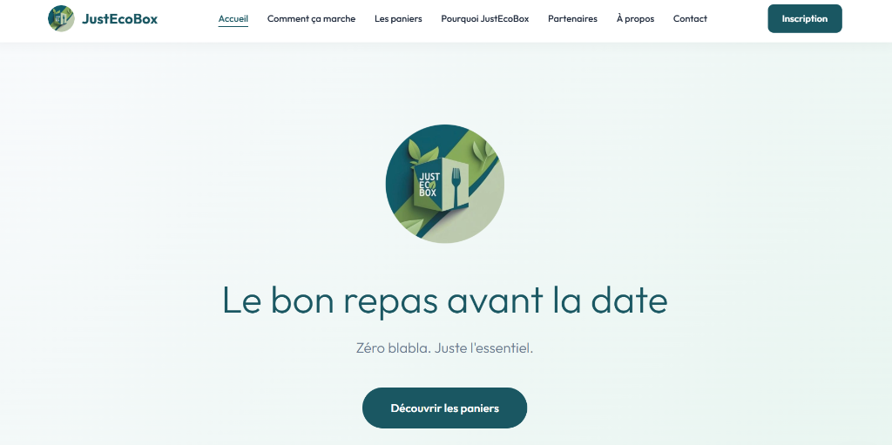

Du développement web à l'
automatisation DevOps.
Diplômé d'un Bachelor DevOps, je conjugue compétences en développement web et culture DevOps (CI/CD, sécurité, monitoring) avec une approche pragmatique centrée sur l'expérience utilisateur et l'amélioration continue. J'intègre les outils d'IA générative dans mes projets via la méthode BMAD, pour allier rigueur méthodologique, bonnes pratiques et efficacité à chaque étape du développement. Mise en place d'un tunnel de vente sur systeme.io.
À propos de Jean-Rose OURA
Développeur logiciel & administrateur DevOps combinant rigueur technique, sens du design et intégration des technologies d'IA.
Diplômé d'un Bachelor DevOps à l'Ecole-IT (Orléans), je conjugue compétences en développement web et culture DevOps (CI/CD, sécurité, monitoring) avec une approche pragmatique centrée sur l'expérience utilisateur et l'amélioration continue.
J'intègre les outils d'IA générative (Claude-code, Antigravity, Aura) dans mes projets via la méthode BMAD, pour allier rigueur méthodologique, bonnes pratiques et efficacité à chaque étape du développement.
Fort d'expériences en entreprise notamment chez MyRH (optimisation SEO +50% et mise en place d'un tunnel de vente sur systeme.io avec +30% de conversion) et chez Ebenyx Technologie, je conçois des solutions digitales fiables, évolutives et centrées sur l'utilisateur.
Développement Web & APIs
HTML, CSS, JavaScript, TypeScript, React.js, Vite, Python, FastAPI, Supabase, PostgreSQL et Vercel.
DevOps & Infrastructure as Code
Docker, Terraform, Ansible, GitLab CI/CD, GitHub Actions, Linux et déploiement continu.
IA Générative & Méthode BMAD
Accélération et fiabilisation des projets via Claude-code, Antigravity, Aura et rigueur méthodique.
Tunnels de Vente & No-Code
Mise en place de tunnels de vente performants sur systeme.io, GoodBarber, Webflow et méthodes Agiles.
Autonome & Autodidacte
Curiosité naturelle et capacité rapide d'assimilation des nouvelles technologies, architectures cloud et outils d'automatisation.
Intégration & Esprit d'Équipe
Excellente communication, bienveillance et collaboration fluide en méthodologie Agile (Scrum/Kanban) avec développeurs et ops.
Rigueur & Bonnes Pratiques
Sens poussé du détail, clean code, documentation technique soignée et conformité aux standards de sécurité et de qualité.
Pragmatisme & Orientation Résultats
Focus sur la valeur concrète apportée aux utilisateurs : interfaces intuitives, rapidité de livraison et stabilité des services.
Dessin, Manga & Création Graphique
Passion pour l'art visuel, les mangas, le character design et la création graphique (Figma, Photoshop, Canva, Pinterest : @jeenn-ross raoul).
Cuisine & Créativité
Plaisir de cuisiner et tester de nouvelles recettes, alliant rigueur, sens du timing et créativité.
Sport & Dépassement de Soi
Pratique sportive régulière pour maintenir l'énergie, la discipline, la persévérance et un esprit compétitif sain.
Lecture & Écriture
Veille continue sur l'univers tech, lecture d'ouvrages variés et rédaction de contenus structurés et synthétiques.
Arbre de Compétences
Arbre de talents interactif. Cliquez sur chaque nœud pour débloquer sa fiche technique, outils et projets associés.
Mes Projets
Explications détaillées de mes architectures logicielles, fonctionnalités clés et captures réelles des projets.


⚔️ Wakkany — Gamification Culturelle & Familiale
Plateforme web interactive immersive qui transforme l'apprentissage des origines, de la culture et de l'histoire en une aventure ludique et engageante.

🏥 PharmaGo Express — Plateforme Intégrée de Santé
Solution complète et sécurisée de gestion de la chaîne pharmaceutique et de livraison express de médicaments, reliant patients, médecins, pharmacies, livreurs et assurances.
VoiceCommandControl et analyse médicale proactive.🎓 IF-EDUPRIME — Plateforme Éducative
Plateforme web éducative moderne et modulaire dédiée à la gestion des parcours d'apprentissage, ressources de formation, suivi des apprenants et espace pédagogique collaboratif.

🌿 JustEcoBox — Solution Éco-responsable
Projet de classe Serious Game (Bachelor 3) dédié à l'économie circulaire et l'écologie, proposant la commande de box éco-responsables sur mesure.
🍽️ Cuisine Ensemble — Partage de Repas Entre Voisins
Plateforme web de partage de repas maison entre voisins : publication, réservation, paiement en ligne et système d'avis, propulsée par un pipeline DevOps complet (Kubernetes, Prometheus, Grafana).
⚔️ BattleQuest — Jeu de Combat & Quêtes en Ligne
Jeu web multijoueur de type RPG/Combat : affrontez des adversaires en temps réel, progressez dans des quêtes et améliorez votre équipement, avec un pipeline DevOps sur GitLab CI/CD.
Arbre de Construction d'un Projet
De l'analyse fonctionnelle aux pipelines CI/CD et à la mise en production : comment j'articule le Fond (règles métier, données), la Forme (UI/UX, 3D) et les Technos (React 19, Three.js, K8s, Prometheus).
💡 Modélisation Métier & Framework BMAD
Cadrage précis des personas, parcours utilisateurs et règles de gestion critiques. Alignement entre vision produit et architecture logicielle pour éliminer la dette technique dès la genèse.
- Wakkany : Modélisation de la gamification familiale (système de clans, pactes d'honneur, arbre de talents XP et quêtes temporisées).
- PharmaGO Express : Segmentation stricte des flux pour 5 profils d'utilisateurs (Patients, Médecins, Pharmacies, Livreurs, Assurances avec calcul automatique du Tiers Payant).
- Cuisine Ensemble : Cadrage du partage de repas de quartier (réservation de portions, créneaux de retrait et avis vérifiés).
🎨 Design Visuel Haute-Fidélité & Modélisation
Conception des maquettes interactives sur Figma, design system réutilisable (tokens, composants atomiques) et schématisation de l'architecture relationnelle PostgreSQL avec Row Level Security (RLS).
- Wakkany : Univers graphique sombre et néon, intégration de modèles d'avatars 3D (GLTF/GLB) animés et responsive design mobile PWA.
- IF-EDUPRIME : Dashboard ergonomique avec suivi en direct de la progression pédagogique et organisation modulaire des cours.
- JustEcoBox : Simulateur interactif de réduction d'empreinte carbone et tunnel de sélection de box éco-responsables sur mesure.
💻 Développement Réactif, 3D WebGL & Microservices
Développement d'interfaces web ultra-réactives avec React 19 et Vite 7, intégration de scènes 3D interactives sous Three.js, communication bidirectionnelle WebSockets et microservices backend asynchrones.
- Wakkany : Rendu 3D temps réel avec Three.js & React Three Fiber, salons multijoueur synchronisés par Supabase Realtime WebSockets.
- Cuisine Ensemble : Architecture SSR moderne avec React 19 + TanStack Start + Node.js 24 + PostgreSQL 16.
- PharmaGO Express : Tracking GPS livreur temps réel avec Leaflet, OCR d'ordonnance via Tesseract.js, assistant vocal IA Leslie et Edge Functions Deno.
- BattleQuest : Moteur de combat et quêtes multijoueur synchronisés par WebSockets avec gestion dynamique de la latence.
🛡️ Conteneurisation Docker, Tests E2E & CI/CD
Isolation hermétique des applications avec Docker multi-stage, automatisation des tests de régression, audit de sécurité et déploiement continu sans interruption de service.
- Pipelines GitHub Actions (Wakkany & Cuisine Ensemble) : Linting ESLint, tests unitaires Vitest, tests End-to-End multi-navigateurs Playwright, scan de secrets automatisé (`scan-secrets.js`) et migration SQL (`supabase db push`).
- Pipeline GitLab CI/CD (BattleQuest) : Intégration et livraison continue gérées sous GitLab avec runners Docker dédiés.
- Scraping Automatisé (PharmaGO) : Bots Python + Selenium exécutés automatiquement toutes les 6 heures pour extraire et géolocaliser les pharmacies de garde.
🚀 Orchestration Kubernetes & Distribution Cloud
Mise en production sur clusters Kubernetes avec gestion fine du trafic, scaling automatique et résilience réseau via le mode PWA hors-ligne.
- Cluster Kubernetes (Cuisine Ensemble) : Manifests K8s déclaratifs (Deployments frontend/backend, StatefulSets PostgreSQL 16, Services, Ingress Nginx, ConfigMaps, Secrets et scripts de port-forwarding).
- Progressive Web App (Wakkany) : Fonctionnement 100% autonome hors-ligne grâce aux Service Workers, gestion du cache et synchronisation différée.
- Hébergement Cloud Haute Disponibilité : Netlify, Vercel et Fly.io avec configuration de certificats SSL automatiques et CDN mondial.
📊 Prometheus, Grafana, Sécurité RLS & SEO
Supervision temps réel des métriques serveurs et conteneurs, protection granulaire des données utilisateurs par politiques SQL et maximisation du taux de conversion.
- Stack Observabilité (Cuisine Ensemble) : Serveur Prometheus (port 9090) collectant les métriques applicatives + dashboards dynamiques Grafana (port 3001) avec alertes automatiques.
- Sécurité SQL RLS (Wakkany & PharmaGO) : Row Level Security activé sur 100% des tables PostgreSQL (`auth.uid() = user_id`), chiffrement des données de santé et rate limiting API.
- Croissance & Conversion (MyRH Solutions) : Tunnels de vente optimisés sur systeme.io (+30% de conversion) et stratégie de référencement naturel (+50% de trafic organique).
Mon Parcours
Historique de mes expériences professionnelles en entreprise et cursus académique en informatique, DevOps et génie logiciel.
Stagiaire Développeur Front-End — MyRH
• Optimisation du référencement SEO : Stratégie de contenu technique générant une augmentation de 50% du trafic organique.
• Tunnels de Vente sur systeme.io : Augmentation de 30% du taux de conversion après conception et optimisation du tunnel de conversion.
• Design UI/UX & Intégration Web : Création de maquettes sur Figma et améliorations de l'expérience utilisateur et de l'accessibilité du site web.
Bachelor 3 Administrateur DevOps — Ecole-IT
Spécialisation approfondie en culture et ingénierie DevOps : administration systèmes Linux avancée, conteneurisation Docker, orchestration Kubernetes, Infrastructure as Code (Terraform, Ansible), pipelines CI/CD (GitHub Actions, GitLab CI), supervision Prometheus & Grafana, et déploiements Cloud.
Stagiaire Développeur — Ebenyx Technologie
• Développement de Fonctionnalités : Collaboration active avec l'équipe de développement pour concevoir et intégrer de nouveaux modules applicatifs.
• Résolution de Bugs & Optimisation : Débogage, refactoring de code et amélioration significative des temps de chargement des applications web.
• Qualité & Bonnes Pratiques : Rédaction de documentations techniques claires et participation régulière aux revues de code (Code Reviews).
Cursus Universitaire & Certifications Professionnelles
• 2024 : Certification en Protection des Données & RGPD (ALISON remote)
• 2023 : Licence 3 Informatique, option Génie Logiciel (ESCAM, Abidjan)
• 2023 : Certificat en Entrepreneuriat et Gestion des Entreprises (CEMS International)
• 2022 : DUT Informatique, option Développeur d'Applications (IPCI, Abidjan)
• 2020 : Baccalauréat série A1 (CNPTE, Abidjan)
Prendre Contact
Ouvert à de nouvelles opportunités professionnelles (CDI, alternance, missions DevOps & Développement).
Coordonnées Directes
N'hésitez pas à me joindre directement par email, téléphone ou sur mes réseaux.